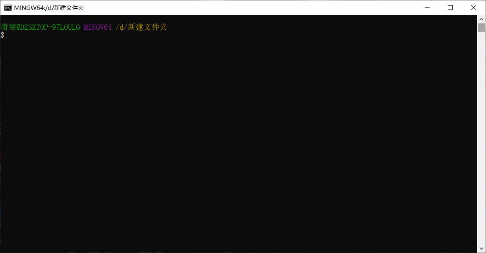
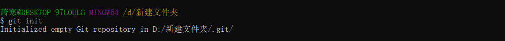
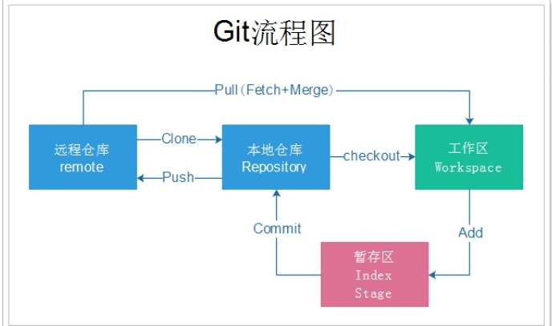
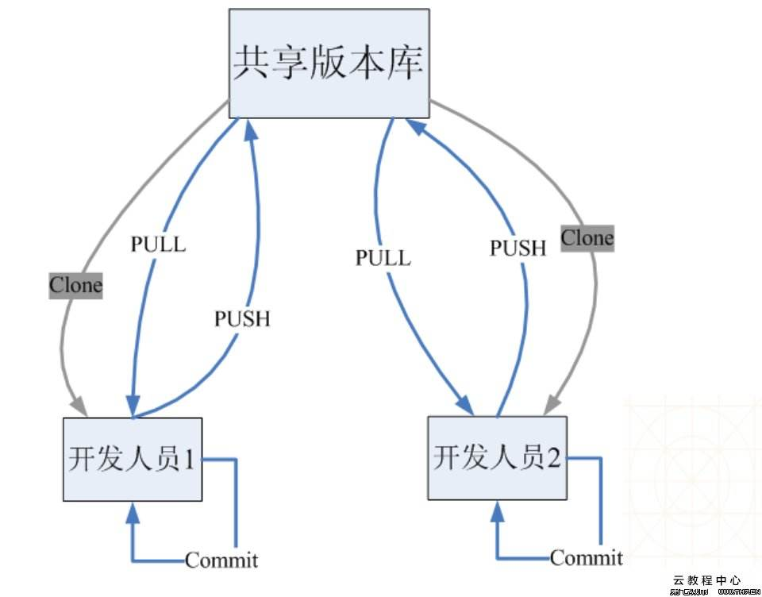

git的学习过程
懵！
git是什莫，还要学的吗？
一开始要学git是，，，，有点蒙的，完全不知道从哪里开始学，然后就百度git，，，，
emmmm，版本控制系统，分布式，嗯，就这样？
为linux开发的软件？那我还要换系统？还是虚拟机！？开放源码？对了，学长跟我说过github是最大的开源网站！
分布式相比于集中式的最大区别在于开发者可以提交到本地，每个开发者通过克隆（git clone），在本地机器上拷贝一个完整的Git仓库。
马马虎虎懂一点了，慕课网搜一下！没有。？！！？？纳尼？居然没有？
那好吧，只好搬出万能的b站了，果然，b站上教学资源一大把！开心！

马马虎虎看一眼，挺简单的！就是几个人一起修改一个文件嘛！
然后就是B站努力的刷视频了！没多少努力与难度，顺便为了记住指令，还特意做了下笔记（常用）


接下来就简单介绍下git的配置和简单使用！
一.本地配置：
1.安装：
安装就请百度咯，你以为我会给你说：
点击[git]（https://git-scm.com/）下载git安装包，下载完成后双击安装包，然后next，选一个盘符（安装应用最好不要在系统盘），install，然后点击完成！？？？
放心吧，我才不会这样告诉你！哼(￢︿̫̿￢☆)
安装完git后在任意位置会出现如图两个选项！
（别杠我，我说任意位置是在文件夹目录，你要跟我说在qq界面右击咋出不来？来来来，谁问的？我给你加个红buff？？）
同时可以在命令指示符里输入npm -v查看版本号！（别问我怎么打开命令指示符，我会把win＋r然后输入cmd回车就可以打开这种方法交给你嘛？别想！不可能！什么，你问我win是哪个键，别动，就是你左手边那个四个小方块那个！）
2.配置git库：
打开文件夹，用命令或者直接右击创建一个文件夹（最好是在系统盘以外的盘），命名随你都随你！你说了算！
在文件夹内右击，点击git bash here（别纠结大小写，谢谢！）
(本文指令没说的在前面我记得东西都有出现，别说看不见，看不清就去百度！我字丑怎么了！你来教我写字 啊！(￢︿̫̿￢☆))
然后会出现

这样一个窗口！别问！什么都别问，问了我也不会说，安安静静看下去！
首先我们创建一个本地的git仓库!

这样就成功了，我们的新建文件目录下就会自动生成一个.git的隐藏文件夹
（别问我为啥你看不见，都说是隐藏的了，让你看见还能叫隐藏文件夹吗？）
（也别问我你为啥能看见，我会告诉你因为你打开了查看里面的隐藏文件选项吗？没门！）
没事的时候别乱动.git里面的文件！
然后配置自己的本地用户名和邮箱！
然后按照需求用代码就好了，我实在懒得写了，啊啊啊啊，工作流程给你们放下面！


自己理解吧！